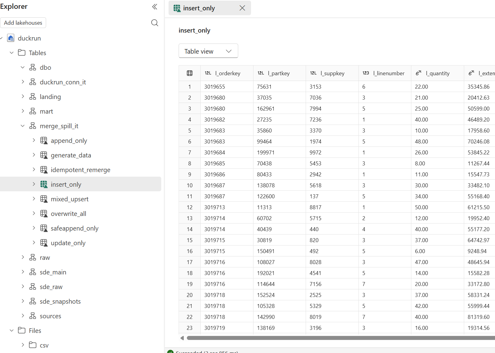

Generated dbt documentation for the integration dbt projects (DuckDB → Delta Lake via delta-rs).

abfss://).
Full catalog with column metadata over the real Delta tables.
source: djouallah/dbt_fabric_python_delta
merge_spill_bench): a chain of
merge / append / overwrite ops on a TPCH lineitem. Built for real on a tiny scale
factor, so the catalog carries Delta stats (row counts / size / last-modified). The heavy
60M-row spill run is a separate release gate, not the docs build.
source: djouallah/duckrun
coffee_shop): ingest two dimension CSVs over
https, dedup the SCD2 product dim, generate an N-row fact partitioned by region, and a revenue
mart. Built for real, so the catalog carries Delta stats (row counts / size / last-modified).
ported from: JosueBogran/coffeeshopdatageneratorv2
josephmachado/simple_dbt_project port (sde_dbt_tutorial):
raw application tables → bronze typing → a Delta-backed SCD2 snapshot of the customer dim → a
merge-incremental clickstream fact → the orders_obt gold mart joined through the
SCD2 validity window. Built for real, so the catalog carries Delta stats (row counts / size /
last-modified).
source: josephmachado/simple_dbt_project
duckrun.connect() (not dbt): reads live NYC TLC
Yellow-Taxi data straight off https and lands it into Delta on OneLake using nothing but
conn.sql(...) — QUALIFY, PIVOT, ROLLUP, ASOF JOIN, a SQL-only upsert, time travel, and a
concurrent-MERGE clash. Click through for every statement and its actual output from a live run.
source: demo_taxi.py